Per i team che gestiscono SUSE Harvester HCI
Un'unica console moderna per tutti i tuoi cluster Harvester
harvester-ops riunisce ogni cluster in un'unica interfaccia, trasforma le operazioni lunghe in un solo gesto tracciato e mantiene una registrazione di tutto ciò che accade, dalla tua console o da qualsiasi altro posto.
Open source. Pronto per l'airgap. Cinque lingue. v1.86.0
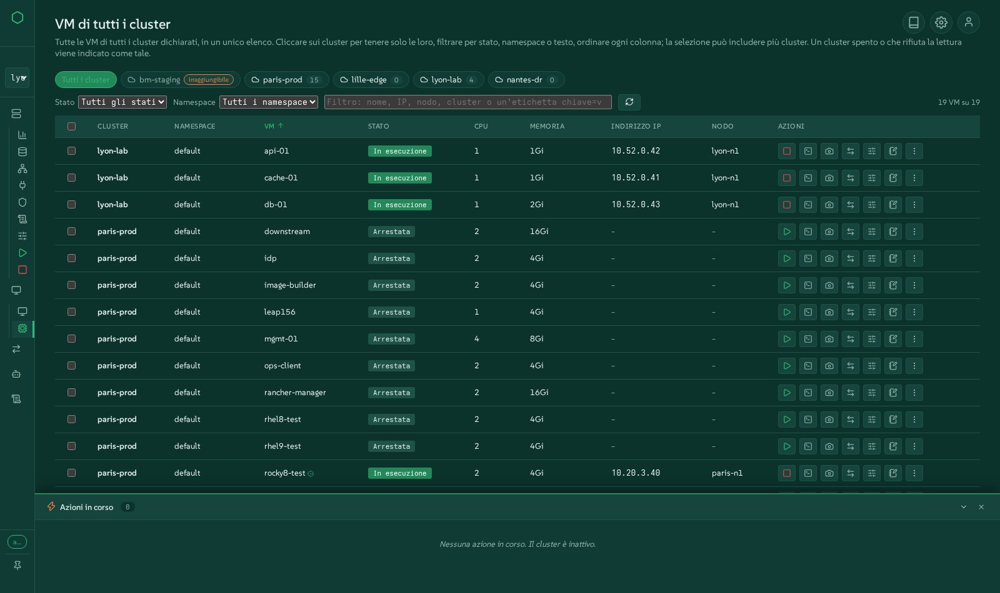
Ogni cluster, un'unica interfaccia
Dichiara tutti i cluster Harvester che gestisci. Passa da uno all'altro con un clic, elenca ogni VM di ogni cluster in un'unica tabella, scopri quale cluster è spento o ti rifiuta l'accesso, senza che gli altri debbano attendere.
Automazione semplificata
Arresto e avvio controllati, aggiornamenti, migrazioni VMware a caldo, cluster Kubernetes, installazioni bare-metal, Terraform: le operazioni lunghe diventano un solo gesto, con gli stessi script dietro il pulsante e la riga di comando.
Ogni evento tracciato
Ogni azione viene eseguita come un job tracciato con passaggi in tempo reale, log e cronologia. Anche le modifiche effettuate fuori dalla console, in Harvester, kubectl o Rancher, vengono mostrate.
Guardala dal vivo, nel tuo browser
La demo è l'interfaccia reale di questa release, in esecuzione su cluster simulati: cinque cluster, VM da avviare e fermare, migrazioni VMware in corso, un dock delle azioni che si muove. Ogni gesto funziona e nulla viene modificato.
Tutto ciò che fa harvester-ops
Raggruppato come gli operatori pensano al proprio lavoro. Ogni famiglia è collegata alla schermata della demo dove puoi provarla.
Tutti i tuoi cluster in un solo posto
Un'unica console per una flotta di cluster Harvester, fisici o annidati, vicini o lontani.
- Dichiara i cluster dall'interfaccia o dal file di configurazione; cambiare cluster cambia davvero ogni vista.
- Tutte le VM di tutti i cluster: ogni VM di ogni cluster in un'unica tabella, filtrabile per cluster, stato, namespace o testo, ordinabile su qualsiasi colonna, con avvio, arresto, riavvio, migrazione e il menu completo delle azioni su una selezione che attraversa più cluster.
- I cluster spenti o irraggiungibili vengono segnalati come tali, all'istante, invece di bloccare la pagina.
- Migrazioni su tutti i cluster in un'unica tabella o su una timeline condivisa.
- Note su cluster, nodi e VM, conservate dalla console.
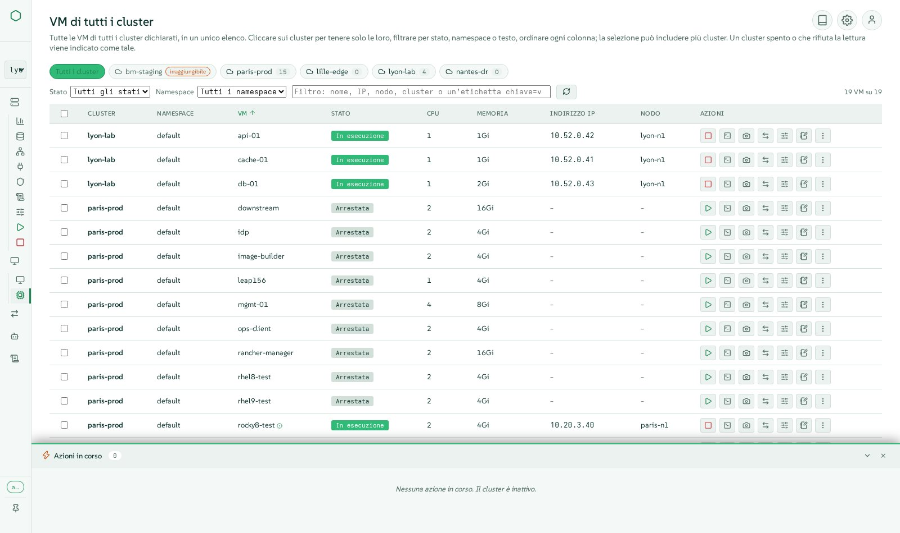
Macchine virtuali, come in Harvester e anche più
Tutto ciò che Harvester offre su una VM, in finestre moderne che restano aperte una affianco all'altra.
- Crea VM con immagini, template, cloud-init, reti, disk e posizionamento, verificati rispetto allo spazio realmente allocabile.
- Il menu completo delle azioni: avvio, arresto, riavvio, pausa, riavvio controllato, clonazione, template, YAML, backup, snapshot, eliminazione con i relativi volumi.
- Modifiche a caldo: hot-plug di CPU e memoria, CD-ROM, schede di rete, migrazione dello storage, credenziali di accesso.
- Una console VNC che più persone possono condividere contemporaneamente, con una tastiera sicura per AZERTY, e una console seriale.
- Snapshot, backup, ripristini e le relative pianificazioni; live migration tra nodi.
- Sposta una VM verso un altro cluster, esportala in un archivio, importala altrove, con velocità, tempo restante e controllo della velocità.
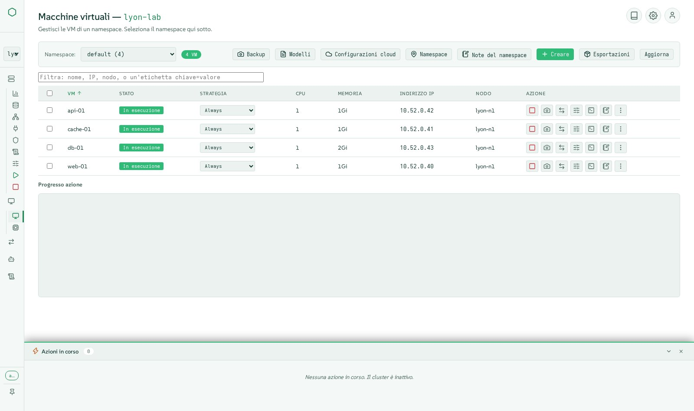
Vedi il cluster come è costruito
Viste tratte dal cluster live, un blocco per ogni oggetto, nello spirito degli strumenti VMware.
- Panoramica con metriche, una mappa del cluster di nodi e VM, eventi e indicatori di utilizzo.
- Mappe di fabric, rete e storage: un blocco per ogni switch, rete, volume e disco.
- Il percorso di rete di una VM, dalla sua scheda fino alla porta fisica.
- Host come in Harvester: disk, tag, huge pages, KSM, CPU manager, gestione out-of-band tramite harvester-seeder, modalità di manutenzione con il drain seguito in tempo reale.
- Namespace, progetti Rancher, quote e membri.
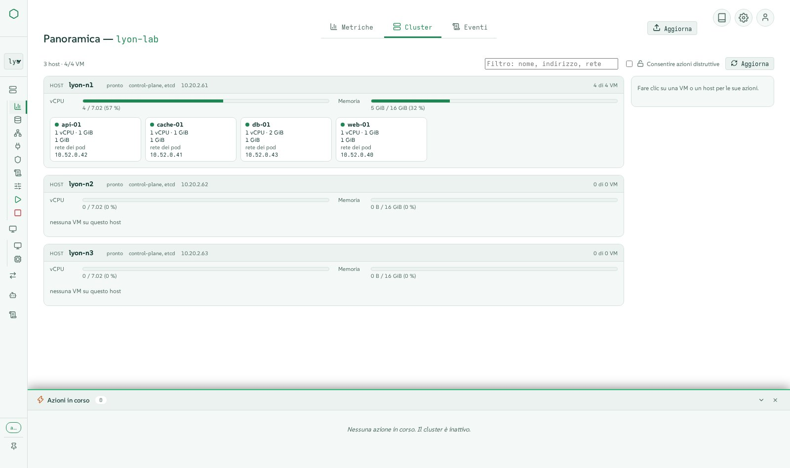
Storage di cui ti puoi fidare
Longhorn e le immagini, spiegati invece che semplicemente elencati.
- Volumi, immagini, storage class (incluse quelle cifrate), snapshot e backup, con creazione, modifica ed eliminazione in finestre dedicate.
- Volumi degradati spiegati e corretti in sicurezza: repliche mancanti, repliche non posizionate, ricostruzioni in corso.
- Spazio allocabile calcolato come lo decide Longhorn, così una VM non viene mai pianificata dove non può entrare.
- Storage LVM e download delle immagini CDI dove Harvester li supporta.
- Impostazioni della destinazione di backup e support bundle.
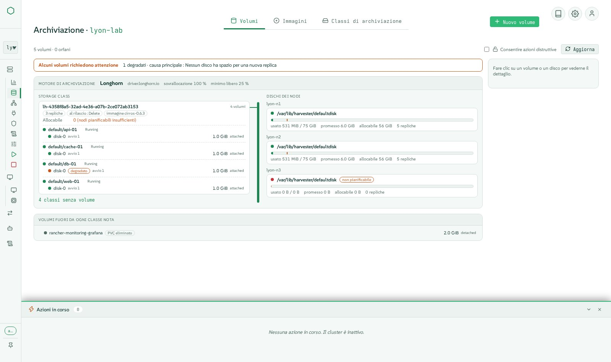
Reti, overlay e underlay
Dalle reti delle VM alle VPC kube-ovn, con form e un diagramma dal vivo.
- Reti delle VM, reti del cluster e le relative configurazioni, load balancer e pool di IP, reti dell'host.
- Reti di storage, migrazione e RWX impostate in un solo posto.
- kube-ovn: VPC, subnet, NAT gateway, reti provider, network policy, stato di salute.
- IP statici applicati realmente sulle reti overlay.
- Dispositivi PCI, USB e SR-IOV passati in passthrough alle VM.
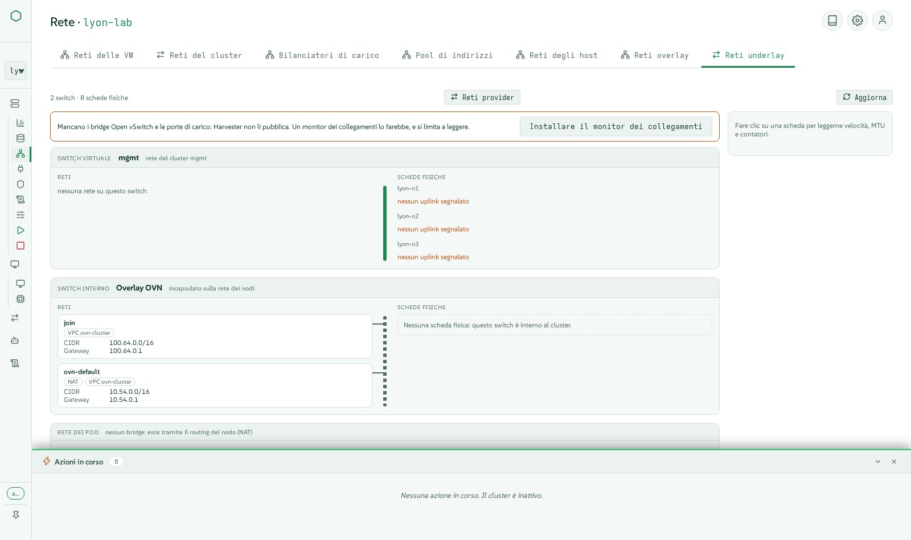
Lascia VMware, a caldo e in modo visibile
Decine di VM spostate da vCenter a Harvester con Forklift, con il cutover più breve possibile.
- Forklift installato per te, con la sua immagine VDDK creata e pubblicata sul tuo registry.
- Sorgenti vCenter dichiarate, inventario navigabile, wave composte con mapping di rete e storage.
- Migrazione a caldo: copie incrementali mentre la VM continua a funzionare, poi un cutover pianificato o immediato.
- Wave mostrate come blocchi o come corsie su una timeline, su tutti i cluster.
- Rollback verso la sorgente, che indica quando VMware arresta la sorgente su una domanda, e controlli che rifiutano una wave il cui indirizzo MAC è già in uso.
- Importazioni di VM da VMware, OpenStack o un archivio OVA.
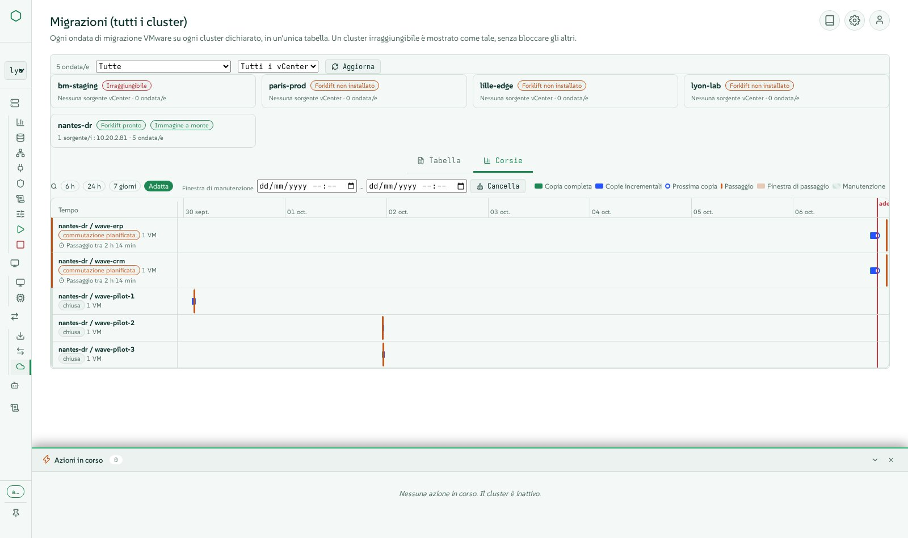
Il ciclo di vita del cluster senza stress
Le operazioni che nessuno vuole fare a mano alle 2 di notte.
- Arresto controllato in otto passaggi ordinati: preflight, snapshot di etcd, snapshot delle VM, arresto ordinato delle VM, manutenzione dello storage, cordon, worker, control plane.
- Avvio in cinque passaggi, Wake-on-LAN incluso, riavviando solo le VM fermate dall'arresto, nei loro gruppi e nel loro ordine.
- Gruppi di VM che si arrestano e si avviano in sequenza tra gruppi e in parallelo all'interno di un gruppo.
- Aggiornamenti di Harvester dall'interfaccia, con un'ISO airgap quando non c'è internet.
- Manutenzione dei nodi con il drain seguito in tempo reale e i blocchi spiegati.
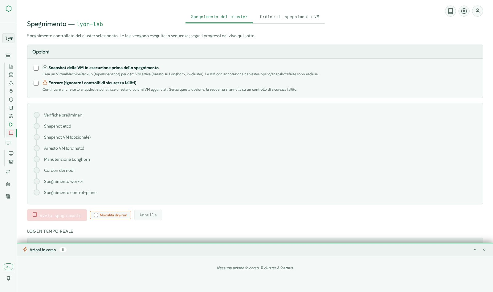
Infrastructure as code e bare metal
Da server vuoti a cluster Kubernetes, da un'unica console.
- Installazioni bare-metal di Harvester tramite virtual media Redfish: discovery, disk e pool, profili multi-nodo, installazioni in batch, il cluster che si dichiara da solo.
- Cluster Kubernetes (RKE2) creati su Harvester con Cluster API, con servizi a bilanciamento di carico tramite CAAPH e kube-vip.
- Dichiarazioni Terraform mantenute dalla console, uno stato per ciascuna, il piano letto prima di applicarlo; OpenTofu e il provider Harvester incorporati.
- Monitoring e logging: metriche Prometheus, regole di alerting, flussi di log e output, con i controlli di configurazione che Harvester lascia silenziosi.
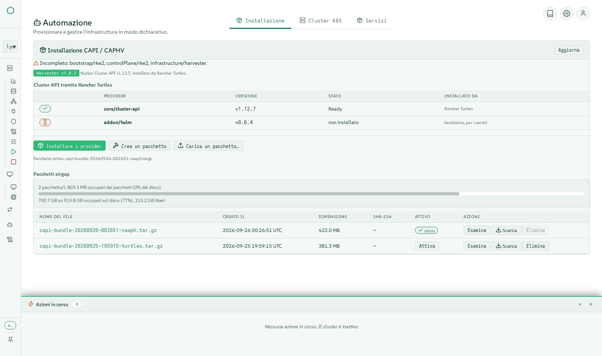
Ogni azione tracciata, ogni evento visibile
Sapere cosa è successo, chi l'ha fatto e come è andata a finire.
- Ogni gesto è un'azione tracciata con passaggi in tempo reale nel dock delle azioni, poi log e cronologia nella scheda Activity.
- Anche le modifiche effettuate fuori dalla console (interfaccia Harvester, kubectl, Rancher) vengono rilevate ed elencate.
- Activity filtrabile per cluster, stato e testo; una cronologia duratura delle ultime esecuzioni con i relativi log.
- Eventi del cluster e utilizzo nella panoramica; ciò che il cluster ti ha rifiutato viene indicato invece di una vista vuota.
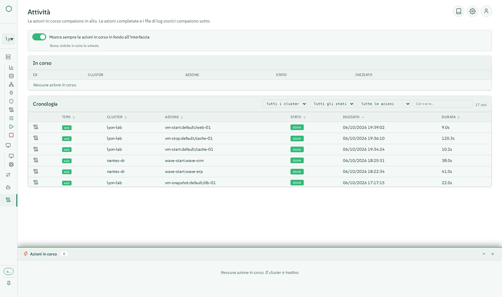
Sicura per impostazione predefinita
Costruita per team di produzione, con il minimo privilegio ovunque.
- L'accesso è obbligatorio, con account e ruoli della console (visualizzatore, operatore, amministratore).
- Single sign-on tramite Rancher: le azioni vengono eseguite con i diritti Rancher della persona stessa, mai con un amministratore condiviso.
- Identità delegata al cluster tramite l'impersonazione Kubernetes, così l'RBAC del cluster si applica a ciascuna persona.
- Limiti di frequenza, input validati, kubeconfig con ambito limitato, segreti mai mostrati in chiaro.
- Segreti e chiavi SSH del cluster gestiti in form tipizzati.
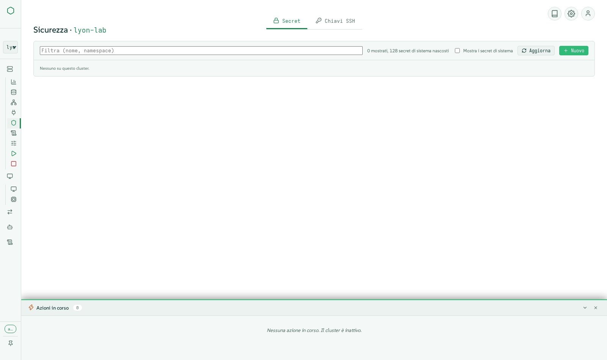
Pronta per la produzione, anche offline
Un bundle firmato che si installa e si aggiorna da solo senza internet.
- Un unico tarball firmato con l'immagine del container, il bundle Cluster API, OpenTofu e il provider Terraform: pronto all'uso in un sito airgap.
- Aggiornamenti dall'interfaccia, online o da un archivio caricato, con firma verificata, rollback automatico se la nuova versione non risponde.
- Pensata per flotte di grandi dimensioni: letture condivise e processi worker, 60 cluster con circa quattro core CPU.
- Cinque lingue (inglese, francese, tedesco, spagnolo, italiano), cinque temi chiari e scuri, tooltip ovunque, utilizzabile da tastiera.
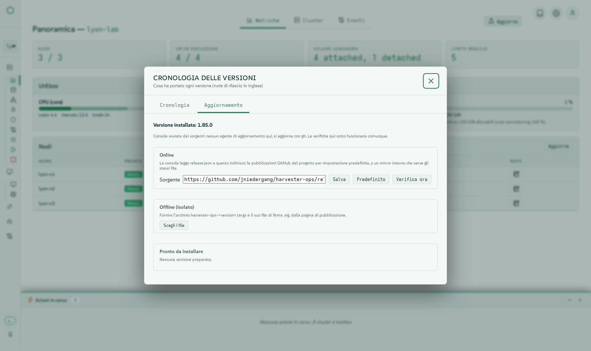
Almeno tutto ciò che fa l'interfaccia Harvester
Ogni menu di harvester-ops offre almeno le funzioni dell'interfaccia Harvester 1.9, con un'esperienza moderna in più. Una tabella di parità funzione per funzione viene pubblicata a ogni release.
Leggi la tabella di paritàSotto il cofano
Uno stack piccolo e verificabile: nessun framework JavaScript, nessun download a runtime, ogni azione è uno script che puoi eseguire tu stesso.
Architettura
Browser
Moduli JavaScript vanilla, Server-Sent Events per i passaggi in tempo reale, WebSockets per le console.
Console
Applicazione Flask che serve l'interfaccia e una REST API, con accesso, ruoli, limiti di frequenza e un motore delle azioni (SQLite in modalità WAL).
Script
Ogni operazione è uno script bash o Python in bin/, eseguito dalla console come azione tracciata e utilizzabile anche da solo dalla riga di comando.
Cluster
Letti direttamente tramite l'API Kubernetes (connessioni pooled, letture condivise, processi worker) o kubectl; agisce con l'identità della persona.
Principi di design
- Riga di comando e interfaccia sono equivalenti: l'interfaccia non bypassa mai gli script.
- Ogni gesto che modifica lo stato è un'azione tracciata, visibile in tempo reale e conservata nella cronologia.
- Airgap prima di tutto: nessun accesso di rete necessario a runtime, tutto è incluso nel bundle.
- Minimo privilegio: il cluster vede la persona, non la console.
- Testata realmente su cluster Harvester prima di ogni release, non solo con test unitari.
Tecnologie e versioni
Lette direttamente dalla release al momento della costruzione di questa pagina. (v1.86.0)
Runtime
| Componente | Versione | Ruolo |
|---|---|---|
| Python | 3.11 | linguaggio della console e dei suoi strumenti |
| SUSE BCI Python image | registry.suse.com/bci/python:3.11 | base dell’immagine container |
| SQLite | WAL | cronologia delle azioni e note, senza server di database |
Librerie Python
| Componente | Versione | Ruolo |
|---|---|---|
| bcrypt | 3.2.2 | motore di hash delle password |
| flask | 3.0.3 | framework web della console |
| flask-limiter | 4.1.1 | limiti di frequenza su ogni endpoint che modifica |
| flask-sock | 0.7.0 | WebSocket delle console VNC e seriale |
| itsdangerous | 2.2.0 | cookie di sessione firmati |
| jinja2 | 3.1.6 | modelli di pagina |
| markdown | 3.6 | rendering delle note di rilascio e della documentazione |
| passlib | 1.7.4 | hash delle password degli account della console |
| prometheus-client | 0.25.0 | endpoint delle metriche |
| pyyaml | 6.0.2 | configurazione e manifest Kubernetes |
| werkzeug | 3.1.8 | toolkit WSGI sotto Flask |
| y-py | 0.6.2 | modifica condivisa delle note |
Librerie browser incorporate
| Componente | Versione | Ruolo |
|---|---|---|
| Lucide icons | 1.44.0 | il set di icone monocromatiche |
| xterm.js | 5.5.0 | console seriale delle VM |
| noVNC | 1.7.0 | console grafica delle VM, condivisa tra più persone |
| Tiptap | embedded | note in testo formattato |
| Yjs | 13.6.20 | note condivise in tempo reale |
Strumenti nell'immagine
| Componente | Versione | Ruolo |
|---|---|---|
| kubectl | v1.30.5 | client Kubernetes, ripiego delle letture dirette dell’API |
| yq | v4.44.3 | elaborazione YAML negli script |
| OpenTofu | 1.12.6 | applica le dichiarazioni Terraform (MPL-2.0) |
| xorriso | openSUSE package | rimasterizzazione dell’ISO di Harvester per il bare metal |
| OpenSSH client | openSUSE package | accesso ai nodi per arresto e avvio |
| terraform-provider-harvester | 1.9.0 | risorse Harvester nelle dichiarazioni Terraform |
Bundle Cluster API
| Componente | Versione | Ruolo |
|---|---|---|
| cluster-api | v1.10.4 | componente Cluster API |
| cabp-rke2 | v0.16.1 | componente Cluster API |
| cacp-rke2 | v0.16.1 | componente Cluster API |
| caphv | v0.2.8 | componente Cluster API |
| cert-manager | v1.16.2 | componente Cluster API |
| caphv-clusterclass | v0.2.8 | componente Cluster API |
| turtles-rke2-bootstrap | v0.25.2 | componente Cluster API |
| turtles-rke2-control-plane | v0.25.2 | componente Cluster API |
| turtles-caphv | v0.10.1 | componente Cluster API |
| turtles-caaph | v0.6.4 | componente Cluster API |
Harvester
| Componente | Versione | Ruolo |
|---|---|---|
| Harvester HCI | v1.7.x, v1.8.x, v1.9.x | cluster gestiti (testati dal vivo su v1.8 e v1.9) |
| Forklift | v1.8.2 images | migrazioni VMware a caldo |
| Rancher | 2.14 | accesso unico e diritti ereditati (provider OIDC) |
Installa in pochi minuti
Scarica il bundle firmato dalle release di GitHub, verificalo, esegui l'installer. Farà le poche domande necessarie, inclusi i tuoi certificati se lo desideri.
- 1Scarica la release e la sua firma
- 2Verifica il checksum
- 3Esegui l'installer come root
- 4Apri la console ed effettua l'accesso
V=1.86.0
curl -LO https://github.com/jniedergang/harvester-ops/releases/download/v$V/harvester-ops-$V.tar.gz
curl -LO https://github.com/jniedergang/harvester-ops/releases/download/v$V/harvester-ops-$V.tar.gz.sha256
curl -LO https://github.com/jniedergang/harvester-ops/releases/download/v$V/harvester-ops-$V.tar.gz.sig
sha256sum -c harvester-ops-$V.tar.gz.sha256
tar xzf harvester-ops-$V.tar.gz && cd harvester-ops-$V
sudo ./install.shRichiede un host Linux con Podman e systemd, e l'accesso all'API Kubernetes dei tuoi cluster.
Guardala in azione
Brevi clip sottotitolate filmate su cluster reali, in inglese e francese.
Guarda i video su GitHub